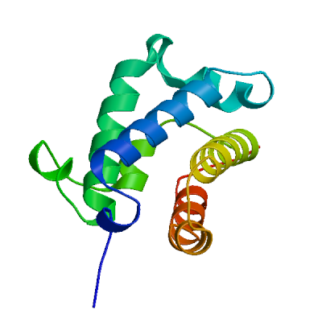
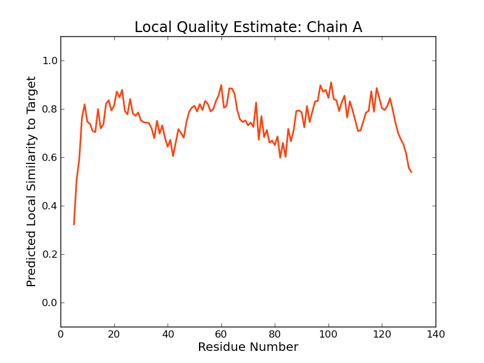
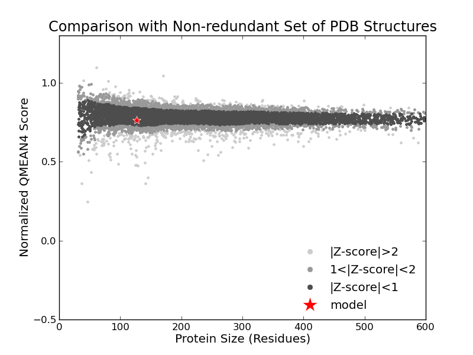

SWISS-MODEL Homology Modelling Report |
Model Building Report
This document lists the results for the homology modelling project "T451DRAFT_2466" submitted to SWISS-MODEL workspace on July 11, 2017, 11:17 p.m..The submitted primary amino acid sequence is given in Table T1.
If you use any results in your research, please cite the relevant publications:
Marco Biasini; Stefan Bienert; Andrew Waterhouse; Konstantin Arnold; Gabriel Studer; Tobias Schmidt; Florian Kiefer; Tiziano Gallo Cassarino; Martino Bertoni; Lorenza Bordoli; Torsten Schwede. (2014). SWISS-MODEL: modelling protein tertiary and quaternary structure using evolutionary information. Nucleic Acids Research (1 July 2014) 42 (W1): W252-W258; doi: 10.1093/nar/gku340.Arnold, K., Bordoli, L., Kopp, J. and Schwede, T. (2006) The SWISS-MODEL workspace: a web-based environment for protein structure homology modelling. Bioinformatics, 22, 195-201.
Benkert, P., Biasini, M. and Schwede, T. (2011) Toward the estimation of the absolute quality of individual protein structure models. Bioinformatics, 27, 343-350
Results
The SWISS-MODEL template library (SMTL version 2017-07-06, PDB release 2017-06-30) was searched with Blast (Altschul et al., 1997) and HHBlits (Remmert, et al., 2011) for evolutionary related structures matching the target sequence in Table T1. For details on the template search, see Materials and Methods. Overall 259 templates were found (Table T2).
Models
The following model was built (see Materials and Methods "Model Building"):
Model #01 | File | Built with | Oligo-State | Ligands | GMQE | QMEAN |
|---|---|---|---|---|---|---|
|  | PDB | ProMod3 Version 1.0.2. | MONOMER | None | 0.77 | -0.46 |
|  |  |
| Template | Seq Identity | Oligo-state | Found by | Method | Resolution | Seq Similarity | Range | Coverage | Description |
|---|---|---|---|---|---|---|---|---|---|
| 2xyk.2.A | 46.46 | monomer | HHblits | X-ray | 2.10Å | 0.43 | 5 - 131 | 0.97 | 2-ON-2 HEMOGLOBIN |
| Ligand | Added to Model | Description |
|---|---|---|
| HEM | ✕ - Binding site not conserved. | PROTOPORPHYRIN IX CONTAINING FE |
Target MTENRQLTPYDHIGEEAAILSLVERFYFYMDTLPEAAGIRAMHAADLSAAHDKLFKFLSGWLGGPDLFVQEYGHPRLRQR
2xyk.2.A ----ETVTLYEAIGGDATVRALTRRFYELMDTLPEAARCRAIHPADLSGSEAKFYDYLTGYLGGPPVYVEKHGHPMLRRR
Target HFPFAIDAAARDQWMLCMTKALDEVSMAANFRENLSQALQQLATHMINQSE
2xyk.2.A HFVAPIGPAERDEWLLCFRRAMDETIENAKLREIIWAPVERLAFHMQNQEA
Materials and Methods
Template Search
Template search with Blast and HHBlits has been performed against the SWISS-MODEL template library (SMTL, last update: 2017-07-06, last included PDB release: 2017-06-30).
The target sequence was searched with BLAST (Altschul et al., 1997) against the primary amino acid sequence contained in the SMTL. A total of 25 templates were found.
An initial HHblits profile has been built using the procedure outlined in (Remmert, et al., 2011), followed by 1 iteration of HHblits against NR20. The obtained profile has then be searched against all profiles of the SMTL. A total of 234 templates were found.
Template Selection
For each identified template, the template's quality has been predicted from features of the target-template alignment. The templates with the highest quality have then been selected for model building.
Model Building
Models are built based on the target-template alignment using ProMod3. Coordinates which are conserved between the target and the template are copied from the template to the model. Insertions and deletions are remodelled using a fragment library. Side chains are then rebuilt. Finally, the geometry of the resulting model is regularized by using a force field. In case loop modelling with ProMod3 fails, an alternative model is built with PROMOD-II (Guex, et al., 1997).
Model Quality Estimation
The global and per-residue model quality has been assessed using the QMEAN scoring function (Benkert, et al., 2011) . For improved performance, weights of the individual QMEAN terms have been trained specifically for SWISS-MODEL.
Ligand Modelling
Ligands present in the template structure are transferred by homology to the model when the following criteria are met (Gallo -Casserino, to be published): (a) The ligands are annotated as biologically relevant in the template library, (b) the ligand is in contact with the model, (c) the ligand is not clashing with the protein, (d) the residues in contact with the ligand are conserved between the target and the template. If any of these four criteria is not satisfied, a certain ligand will not be included in the model. The model summary includes information on why and which ligand has not been included.
Oligomeric State Conservation
Homo-oligomeric structure of the target protein is predicted based on the analysis of pairwise interfaces of the identified template structures. For each relevant interface between polypeptide chains (interfaces with more than 10 residue-residue interactions), the QscoreOligomer (Mariani et al., 2011) is predicted from features such as similarity to target and frequency of observing this interface in the identified templates (Kiefer, Bertoni, Biasini, to be published). The prediction is performed with a random forest regressor using these features as input parameters to predict the probability of conservation for each interface. The QscoreOligomer of the whole complex is then calculated as the weight-averaged QscoreOligomer of the interfaces. The oligomeric state of the target is predicted to be the same as in the template when QscoreOligomer is predicted to be higher or equal to 0.5.
References
Altschul, S.F., Madden, T.L., Schaffer, A.A., Zhang, J., Zhang, Z., Miller, W. and Lipman, D.J. (1997) Gapped BLAST and PSI-BLAST: a new generation of protein database search programs. Nucleic Acids Res, 25, 3389-3402.
Remmert, M., Biegert, A., Hauser, A. and Soding, J. (2012) HHblits: lightning-fast iterative protein sequence searching by HMM-HMM alignment. Nat Methods, 9, 173-175.
Guex, N. and Peitsch, M.C. (1997) SWISS-MODEL and the Swiss-PdbViewer: an environment for comparative protein modeling. Electrophoresis, 18, 2714-2723.
Sali, A. and Blundell, T.L. (1993) Comparative protein modelling by satisfaction of spatial restraints. J Mol Biol, 234, 779-815.
Benkert, P., Biasini, M. and Schwede, T. (2011) Toward the estimation of the absolute quality of individual protein structure models. Bioinformatics, 27, 343-350.
Mariani, V., Kiefer, F., Schmidt, T., Haas, J. and Schwede, T. (2011) Assessment of template based protein structure predictions in CASP9. Proteins, 79 Suppl 10, 37-58.
Table T1:
Primary amino acid sequence for which templates were searched and models were built.
ALDEVSMAANFRENLSQALQQLATHMINQSE
Table T2:
| Template | Seq Identity | Oligo-state | Found by | Method | Resolution | Seq Similarity | Coverage | Description |
|---|---|---|---|---|---|---|---|---|
| 4uur.1.A | 50.00 | monomer | BLAST | X-ray | 2.21Å | 0.43 | 0.98 | PUTATIVE HEMOGLOBIN-LIKE OXYGEN-BINDING PROTEIN |
| 2xyk.1.A | 46.46 | monomer | HHblits | X-ray | 2.10Å | 0.43 | 0.97 | 2-ON-2 HEMOGLOBIN |
| 2xyk.2.A | 46.46 | monomer | HHblits | X-ray | 2.10Å | 0.43 | 0.97 | 2-ON-2 HEMOGLOBIN |
| 4uur.1.A | 50.00 | monomer | HHblits | X-ray | 2.21Å | 0.43 | 0.96 | PUTATIVE HEMOGLOBIN-LIKE OXYGEN-BINDING PROTEIN |
| 2xyk.1.A | 47.97 | monomer | BLAST | X-ray | 2.10Å | 0.43 | 0.94 | 2-ON-2 HEMOGLOBIN |
| 2xyk.2.A | 47.97 | monomer | BLAST | X-ray | 2.10Å | 0.43 | 0.94 | 2-ON-2 HEMOGLOBIN |
| 5v3v.1.A | 34.92 | homo-dimer | HHblits | X-ray | 2.14Å | 0.39 | 0.96 | Globin |
| 5v3t.1.A | 36.00 | homo-dimer | HHblits | X-ray | 1.90Å | 0.39 | 0.95 | Globin |
| 5v3t.1.B | 36.00 | homo-dimer | HHblits | X-ray | 1.90Å | 0.39 | 0.95 | Globin |
| 5v3u.1.A | 35.20 | homo-dimer | HHblits | X-ray | 2.50Å | 0.38 | 0.95 | Globin |
| 1ux8.1.A | 37.90 | monomer | HHblits | X-ray | 2.15Å | 0.39 | 0.95 | YJBI PROTEIN |
| 5v3t.1.A | 37.70 | homo-dimer | BLAST | X-ray | 1.90Å | 0.40 | 0.93 | Globin |
| 5v3t.1.B | 37.70 | homo-dimer | BLAST | X-ray | 1.90Å | 0.40 | 0.93 | Globin |
| 2bkm.1.A | 36.29 | monomer | HHblits | X-ray | 1.50Å | 0.38 | 0.95 | TRUNCATED HEMOGLOBIN FROM GEOBACILLUS STEAROTHERMOPHILUS |
| 5v3v.1.A | 36.89 | homo-dimer | BLAST | X-ray | 2.14Å | 0.39 | 0.93 | Globin |
| 5v3u.1.A | 36.89 | homo-dimer | BLAST | X-ray | 2.50Å | 0.39 | 0.93 | Globin |
| 2bmm.1.A | 36.89 | monomer | HHblits | X-ray | 2.48Å | 0.38 | 0.93 | THERMOSTABLE HEMOGLOBIN FROM THERMOBIFIDA FUSCA |
| 2bmm.1.A | 36.07 | monomer | BLAST | X-ray | 2.48Å | 0.38 | 0.93 | THERMOSTABLE HEMOGLOBIN FROM THERMOBIFIDA FUSCA |
| 1ux8.1.A | 41.18 | monomer | BLAST | X-ray | 2.15Å | 0.40 | 0.91 | YJBI PROTEIN |
| 4uzv.1.A | 34.96 | homo-dimer | BLAST | X-ray | 3.40Å | 0.37 | 0.94 | HEMOGLOBIN |
| 2bkm.1.A | 37.19 | monomer | BLAST | X-ray | 1.50Å | 0.39 | 0.92 | TRUNCATED HEMOGLOBIN FROM GEOBACILLUS STEAROTHERMOPHILUS |
| 4uzv.1.A | 34.15 | homo-dimer | HHblits | X-ray | 3.40Å | 0.37 | 0.94 | HEMOGLOBIN |
| 1ngk.1.A | 31.71 | homo-12-mer | HHblits | X-ray | 2.11Å | 0.36 | 0.94 | Hemoglobin-like protein HbO |
| 1ngk.1.B | 31.71 | homo-12-mer | HHblits | X-ray | 2.11Å | 0.36 | 0.94 | Hemoglobin-like protein HbO |
| 1ngk.1.D | 31.71 | homo-12-mer | HHblits | X-ray | 2.11Å | 0.36 | 0.94 | Hemoglobin-like protein HbO |
| 1ngk.1.G | 31.71 | homo-12-mer | HHblits | X-ray | 2.11Å | 0.36 | 0.94 | Hemoglobin-like protein HbO |
| 1ngk.1.H | 31.71 | homo-12-mer | HHblits | X-ray | 2.11Å | 0.36 | 0.94 | Hemoglobin-like protein HbO |
| 5d1v.1.A | 33.33 | homo-dimer | HHblits | X-ray | 1.74Å | 0.36 | 0.94 | Globin |
| 5d1v.1.B | 33.33 | homo-dimer | HHblits | X-ray | 1.74Å | 0.36 | 0.94 | Globin |
| 2qrw.1.B | 30.89 | homo-dimer | HHblits | X-ray | 1.93Å | 0.36 | 0.94 | Hemoglobin-like protein HbO |
| 2qrw.1.A | 30.89 | homo-dimer | HHblits | X-ray | 1.93Å | 0.36 | 0.94 | Hemoglobin-like protein HbO |
| 2qrw.2.A | 30.89 | homo-dimer | HHblits | X-ray | 1.93Å | 0.36 | 0.94 | Hemoglobin-like protein HbO |
| 2qrw.4.A | 30.89 | homo-dimer | HHblits | X-ray | 1.93Å | 0.36 | 0.94 | Hemoglobin-like protein HbO |
| 5d1v.1.A | 34.45 | homo-dimer | BLAST | X-ray | 1.74Å | 0.37 | 0.91 | Globin |
| 5d1v.1.B | 34.45 | homo-dimer | BLAST | X-ray | 1.74Å | 0.37 | 0.91 | Globin |
| 1ngk.1.A | 35.34 | homo-12-mer | BLAST | X-ray | 2.11Å | 0.38 | 0.89 | Hemoglobin-like protein HbO |
| 1ngk.1.B | 35.34 | homo-12-mer | BLAST | X-ray | 2.11Å | 0.38 | 0.89 | Hemoglobin-like protein HbO |
| 1ngk.1.D | 35.34 | homo-12-mer | BLAST | X-ray | 2.11Å | 0.38 | 0.89 | Hemoglobin-like protein HbO |
| 1ngk.1.G | 35.34 | homo-12-mer | BLAST | X-ray | 2.11Å | 0.38 | 0.89 | Hemoglobin-like protein HbO |
| 1ngk.1.H | 35.34 | homo-12-mer | BLAST | X-ray | 2.11Å | 0.38 | 0.89 | Hemoglobin-like protein HbO |
| 4c0n.1.A | 22.58 | homo-dimer | HHblits | X-ray | 1.77Å | 0.33 | 0.95 | 2-ON-2 HEMOGLOBIN |
| 2qrw.1.B | 34.48 | homo-dimer | BLAST | X-ray | 1.93Å | 0.38 | 0.89 | Hemoglobin-like protein HbO |
| 2qrw.1.A | 34.48 | homo-dimer | BLAST | X-ray | 1.93Å | 0.38 | 0.89 | Hemoglobin-like protein HbO |
| 2qrw.2.A | 34.48 | homo-dimer | BLAST | X-ray | 1.93Å | 0.38 | 0.89 | Hemoglobin-like protein HbO |
| 2qrw.4.A | 34.48 | homo-dimer | BLAST | X-ray | 1.93Å | 0.38 | 0.89 | Hemoglobin-like protein HbO |
| 4nk1.1.A | 25.41 | homo-dimer | HHblits | X-ray | 2.21Å | 0.33 | 0.93 | Hemoglobin-like protein |
| 4nk2.1.B | 25.41 | homo-dimer | HHblits | X-ray | 1.96Å | 0.33 | 0.93 | Hemoglobin-like protein |
| 1dly.1.A | 16.81 | monomer | HHblits | X-ray | 1.80Å | 0.30 | 0.91 | HEMOGLOBIN |
| 5ab8.1.A | 21.19 | homo-dimer | HHblits | X-ray | 1.53Å | 0.30 | 0.90 | GROUP 1 TRUNCATED HEMOGLOBIN GLBN |
| 2gl3.1.A | 20.34 | homo-dimer | HHblits | X-ray | 1.92Å | 0.30 | 0.90 | Hemoglobin-like protein HbN |
| 2gkn.1.A | 21.37 | homo-dimer | HHblits | X-ray | 2.10Å | 0.30 | 0.89 | Hemoglobin-like protein HbN |
| 4xdi.1.A | 17.65 | monomer | HHblits | X-ray | 1.89Å | 0.29 | 0.91 | Chlamydomonas reinhardtii THB1 |
| 4xdi.2.A | 17.65 | monomer | HHblits | X-ray | 1.89Å | 0.29 | 0.91 | Chlamydomonas reinhardtii THB1 |
| 2gln.1.A | 21.37 | homo-dimer | HHblits | X-ray | 1.98Å | 0.30 | 0.89 | Hemoglobin-like protein HbN |
| 2gln.1.B | 21.37 | homo-dimer | HHblits | X-ray | 1.98Å | 0.30 | 0.89 | Hemoglobin-like protein HbN |
| 1s56.1.A | 21.37 | monomer | HHblits | X-ray | 2.43Å | 0.30 | 0.89 | Hemoglobin-like protein HbN |
| 1s56.2.A | 21.37 | monomer | HHblits | X-ray | 2.43Å | 0.30 | 0.89 | Hemoglobin-like protein HbN |
| 2gkm.1.A | 20.51 | homo-dimer | HHblits | X-ray | 1.73Å | 0.30 | 0.89 | Hemoglobin-like protein HbN |
| 1uvx.1.A | 17.09 | monomer | HHblits | X-ray | 2.45Å | 0.30 | 0.89 | GLOBIN LI637 |
| 4max.3.A | 17.24 | monomer | HHblits | X-ray | 1.44Å | 0.30 | 0.89 | cyanoglobin |
| 2ksc.1.A | 17.24 | monomer | HHblits | NMR | NA | 0.30 | 0.89 | Cyanoglobin |
| 4l2m.2.A | 17.24 | monomer | HHblits | X-ray | 2.25Å | 0.30 | 0.89 | Cyanoglobin |
| 1s6a.1.A | 18.97 | monomer | HHblits | X-ray | 1.69Å | 0.30 | 0.89 | Cyanoglobin |
| 1rtx.1.A | 18.97 | monomer | HHblits | X-ray | 1.80Å | 0.30 | 0.89 | Cyanoglobin |
| 1mwb.1.A | 18.97 | monomer | HHblits | NMR | NA | 0.30 | 0.89 | Cyanoglobin |
| 2hz3.1.A | 18.97 | monomer | HHblits | X-ray | 1.90Å | 0.30 | 0.89 | Cyanoglobin |
| 3aq8.1.A | 17.24 | monomer | HHblits | X-ray | 1.83Å | 0.30 | 0.89 | Group 1 truncated hemoglobin |
| 3aq5.1.A | 17.24 | monomer | HHblits | X-ray | 1.78Å | 0.30 | 0.89 | Group 1 truncated hemoglobin |
| 1dlw.1.A | 18.26 | monomer | HHblits | X-ray | 1.54Å | 0.30 | 0.88 | HEMOGLOBIN |
| 3aq9.1.A | 17.24 | monomer | HHblits | X-ray | 1.74Å | 0.29 | 0.89 | Group 1 truncated hemoglobin |
| 3aq7.1.A | 16.38 | monomer | HHblits | X-ray | 1.77Å | 0.29 | 0.89 | Group 1 truncated hemoglobin |
| 2ig3.1.A | 19.09 | monomer | HHblits | X-ray | 2.15Å | 0.30 | 0.84 | Group III truncated haemoglobin |
| 2ig3.2.A | 19.09 | monomer | HHblits | X-ray | 2.15Å | 0.30 | 0.84 | Group III truncated haemoglobin |
| 3s1i.1.B | 15.18 | homo-dimer | HHblits | X-ray | 1.77Å | 0.27 | 0.85 | Hemoglobin-like flavoprotein |
| 3s1i.1.A | 15.18 | homo-dimer | HHblits | X-ray | 1.77Å | 0.27 | 0.85 | Hemoglobin-like flavoprotein |
| 1gvh.1.A | 20.18 | homo-12-mer | HHblits | X-ray | 2.19Å | 0.29 | 0.83 | FLAVOHEMOPROTEIN |
| 3ozv.3.A | 14.02 | homo-dimer | HHblits | X-ray | 2.40Å | 0.28 | 0.82 | Flavohemoglobin |
| 3ozu.1.A | 14.02 | monomer | HHblits | X-ray | 2.00Å | 0.28 | 0.82 | Flavohemoprotein |
| 3ozv.3.B | 14.02 | homo-dimer | HHblits | X-ray | 2.40Å | 0.28 | 0.82 | Flavohemoglobin |
| 4g1v.1.A | 17.59 | monomer | HHblits | X-ray | 2.10Å | 0.27 | 0.82 | Flavohemoglobin |
| 4g1b.3.A | 17.59 | monomer | HHblits | X-ray | 3.00Å | 0.27 | 0.82 | Flavohemoglobin |
| 4g1b.1.A | 17.59 | monomer | HHblits | X-ray | 3.00Å | 0.27 | 0.82 | Flavohemoglobin |
| 1cqx.1.A | 14.02 | monomer | HHblits | X-ray | 1.75Å | 0.28 | 0.82 | FLAVOHEMOPROTEIN |
| 2r50.1.A | 15.09 | homo-dimer | HHblits | X-ray | 2.20Å | 0.28 | 0.81 | Non-symbiotic hemoglobin |
| 2r50.1.B | 15.09 | homo-dimer | HHblits | X-ray | 2.20Å | 0.28 | 0.81 | Non-symbiotic hemoglobin |
| 2r50.2.A | 15.09 | homo-dimer | HHblits | X-ray | 2.20Å | 0.28 | 0.81 | Non-symbiotic hemoglobin |
| 2r50.2.B | 15.09 | homo-dimer | HHblits | X-ray | 2.20Å | 0.28 | 0.81 | Non-symbiotic hemoglobin |
| 3qqq.1.A | 13.08 | homo-dimer | HHblits | X-ray | 1.84Å | 0.27 | 0.82 | Non-symbiotic hemoglobin |
| 3qqq.1.B | 13.08 | homo-dimer | HHblits | X-ray | 1.84Å | 0.27 | 0.82 | Non-symbiotic hemoglobin |
| 1d8u.1.A | 14.15 | homo-dimer | HHblits | X-ray | 2.35Å | 0.28 | 0.81 | NON-SYMBIOTIC HEMOGLOBIN |
| 1d8u.1.B | 14.15 | homo-dimer | HHblits | X-ray | 2.35Å | 0.28 | 0.81 | NON-SYMBIOTIC HEMOGLOBIN |
| 3zjj.1.A | 14.29 | homo-dimer | HHblits | X-ray | 2.00Å | 0.28 | 0.80 | PROTOGLOBIN |
| 1vhb.1.A | 14.02 | homo-dimer | HHblits | X-ray | 1.83Å | 0.26 | 0.82 | HEMOGLOBIN |
| 2vhb.1.B | 14.02 | homo-dimer | HHblits | X-ray | 1.76Å | 0.26 | 0.82 | HEMOGLOBIN |
| 3vhb.1.A | 14.02 | homo-dimer | HHblits | X-ray | 2.10Å | 0.26 | 0.82 | PROTEIN (HEMOGLOBIN) |
| 2gnw.1.A | 14.29 | homo-dimer | HHblits | X-ray | 2.40Å | 0.28 | 0.80 | Non-symbiotic hemoglobin 1 |
| 2gnw.1.B | 14.29 | homo-dimer | HHblits | X-ray | 2.40Å | 0.28 | 0.80 | Non-symbiotic hemoglobin 1 |
| 3tld.1.A | 13.08 | homo-dimer | HHblits | X-ray | 1.90Å | 0.26 | 0.82 | Bacterial hemoglobin |
| 3qqr.1.A | 13.33 | monomer | HHblits | X-ray | 2.16Å | 0.27 | 0.80 | Non-legume hemoglobin |
| 3qqr.2.A | 13.33 | monomer | HHblits | X-ray | 2.16Å | 0.27 | 0.80 | Non-legume hemoglobin |
| 3zh0.1.A | 13.33 | homo-dimer | HHblits | X-ray | 2.00Å | 0.27 | 0.80 | PROTOGLOBIN |
| 3zh0.2.A | 13.33 | homo-dimer | HHblits | X-ray | 2.00Å | 0.27 | 0.80 | PROTOGLOBIN |
| 2wy4.1.A | 14.02 | monomer | HHblits | X-ray | 1.35Å | 0.26 | 0.82 | SINGLE DOMAIN HAEMOGLOBIN |
| 2gnv.1.A | 13.33 | homo-dimer | HHblits | X-ray | 2.30Å | 0.27 | 0.80 | Non-symbiotic hemoglobin 1 |
| 2gnv.1.B | 13.33 | homo-dimer | HHblits | X-ray | 2.30Å | 0.27 | 0.80 | Non-symbiotic hemoglobin 1 |
| 4uiq.1.A | 14.29 | homo-dimer | HHblits | X-ray | 1.55Å | 0.27 | 0.80 | GLOBIN-COUPLED SENSOR WITH DIGUANYLATE CYCLASE ACTIVITY |
| 4uiq.2.A | 14.29 | homo-dimer | HHblits | X-ray | 1.55Å | 0.27 | 0.80 | GLOBIN-COUPLED SENSOR WITH DIGUANYLATE CYCLASE ACTIVITY |
| 2oif.1.A | 16.35 | homo-dimer | HHblits | X-ray | 1.80Å | 0.28 | 0.79 | Non-legume hemoglobin |
| 2w31.1.A | 12.50 | homo-dimer | HHblits | X-ray | 1.50Å | 0.27 | 0.79 | GLOBIN |
| 2w31.1.B | 12.50 | homo-dimer | HHblits | X-ray | 1.50Å | 0.27 | 0.79 | GLOBIN |
| 3zhw.1.A | 12.38 | monomer | HHblits | X-ray | 2.22Å | 0.26 | 0.80 | NON-SYMBIOTIC HEMOGLOBIN 1 |
| 3zhw.2.A | 12.38 | monomer | HHblits | X-ray | 2.22Å | 0.26 | 0.80 | NON-SYMBIOTIC HEMOGLOBIN 1 |
| 3tm9.1.A | 13.33 | homo-dimer | HHblits | X-ray | 1.72Å | 0.26 | 0.80 | Bacterial hemoglobin |
| 1or6.1.A | 12.50 | homo-dimer | HHblits | X-ray | 2.71Å | 0.27 | 0.79 | Heme-based aerotactic transducer hemAT |
| 1or6.1.B | 12.50 | homo-dimer | HHblits | X-ray | 2.71Å | 0.27 | 0.79 | Heme-based aerotactic transducer hemAT |
| 1or4.1.A | 12.50 | homo-dimer | HHblits | X-ray | 2.15Å | 0.27 | 0.79 | Heme-based aerotactic transducer hemAT |
| 1or4.1.B | 12.50 | homo-dimer | HHblits | X-ray | 2.15Å | 0.27 | 0.79 | Heme-based aerotactic transducer hemAT |
| 2olp.1.A | 12.62 | homo-dimer | HHblits | X-ray | 1.93Å | 0.27 | 0.79 | Hemoglobin II |
| 3pi4.1.B | 12.62 | homo-dimer | HHblits | X-ray | 3.17Å | 0.27 | 0.79 | Hemoglobin II |
| 3pi1.1.B | 12.62 | homo-dimer | HHblits | X-ray | 2.00Å | 0.27 | 0.79 | Hemoglobin II |
| 1bin.1.A | 16.50 | monomer | HHblits | X-ray | 2.20Å | 0.27 | 0.79 | LEGHEMOGLOBIN A |
| 1fsl.1.A | 16.50 | monomer | HHblits | X-ray | 2.30Å | 0.27 | 0.79 | LEGHEMOGLOBIN A |
| 1fsl.2.A | 16.50 | monomer | HHblits | X-ray | 2.30Å | 0.27 | 0.79 | LEGHEMOGLOBIN A |
| 1hlb.1.A | 13.59 | monomer | HHblits | X-ray | 2.50Å | 0.27 | 0.79 | HEMOGLOBIN (DEOXY) |
| 3zom.1.A | 10.68 | homo-dimer | HHblits | X-ray | 2.20Å | 0.27 | 0.79 | PROTOGLOBIN |
| 3pt8.1.B | 10.68 | hetero-oligomer | HHblits | X-ray | 1.76Å | 0.27 | 0.79 | Hemoglobin III |
| 1hlm.1.A | 7.62 | homo-dimer | HHblits | X-ray | 2.90Å | 0.25 | 0.80 | HEMOGLOBIN (CYANO MET) |
| 4mpm.1.A | 9.43 | homo-dimer | HHblits | X-ray | 1.74Å | 0.24 | 0.81 | Neuroglobin |
| 4mpm.1.B | 9.43 | homo-dimer | HHblits | X-ray | 1.74Å | 0.24 | 0.81 | Neuroglobin |
| 1spg.1.A | 12.38 | hetero-oligomer | HHblits | X-ray | 1.95Å | 0.25 | 0.80 | HEMOGLOBIN |
| 3mvc.1.A | 12.50 | monomer | HHblits | X-ray | 1.40Å | 0.26 | 0.79 | Globin protein 6 |
| 3r0g.1.A | 11.65 | homo-dimer | HHblits | X-ray | 2.20Å | 0.26 | 0.79 | Methanosarcina acetivorans protoglobin |
| 3pt7.1.B | 10.68 | hetero-oligomer | HHblits | X-ray | 2.15Å | 0.26 | 0.79 | Hemoglobin III |
| 3qm7.1.A | 13.46 | monomer | HHblits | X-ray | 0.96Å | 0.26 | 0.79 | Myoglobin |
| 3qma.1.A | 13.46 | monomer | HHblits | X-ray | 0.94Å | 0.26 | 0.79 | Myoglobin |
| 2vee.1.A | 11.65 | homo-dimer | HHblits | X-ray | 2.60Å | 0.26 | 0.79 | PROTOGLOBIN |
| 3zjr.1.B | 11.65 | homo-dimer | HHblits | X-ray | 3.00Å | 0.26 | 0.79 | PROTOGLOBIN |
| 3zjl.1.A | 11.65 | homo-dimer | HHblits | X-ray | 1.50Å | 0.26 | 0.79 | PROTOGLOBIN |
| 3zol.1.A | 11.65 | homo-dimer | HHblits | X-ray | 1.60Å | 0.26 | 0.79 | PROTOGLOBIN |
| 3wct.1.A | 10.68 | hetero-oligomer | HHblits | X-ray | 2.40Å | 0.26 | 0.79 | A1 globin chain of giant V2 hemoglobin |
| 1oj6.1.A | 9.52 | monomer | HHblits | X-ray | 1.95Å | 0.24 | 0.80 | NEUROGLOBIN |
| 1oj6.2.A | 9.52 | monomer | HHblits | X-ray | 1.95Å | 0.24 | 0.80 | NEUROGLOBIN |
| 1oj6.4.A | 9.52 | monomer | HHblits | X-ray | 1.95Å | 0.24 | 0.80 | NEUROGLOBIN |
| 3zjh.1.A | 11.65 | homo-dimer | HHblits | X-ray | 1.70Å | 0.26 | 0.79 | PROTOGLOBIN |
| 3qzx.1.A | 10.68 | homo-dimer | HHblits | X-ray | 1.30Å | 0.26 | 0.79 | Methanosarcina acetivorans protoglobin |
| 3zji.1.A | 10.68 | homo-dimer | HHblits | X-ray | 1.50Å | 0.26 | 0.79 | PROTOGLOBIN |
| 3qzz.1.A | 10.68 | homo-dimer | HHblits | X-ray | 2.40Å | 0.26 | 0.79 | Methanosarcina acetivorans protoglobin |
| 1x46.1.A | 13.00 | monomer | HHblits | X-ray | 1.50Å | 0.28 | 0.76 | hemoglobin component VII |
| 1myt.1.A | 13.59 | monomer | HHblits | X-ray | 1.74Å | 0.26 | 0.79 | MYOGLOBIN |
| 4uii.1.A | 10.58 | homo-dimer | HHblits | X-ray | 2.83Å | 0.25 | 0.79 | GGDEF DOMAIN PROTEIN |
| 4uii.1.B | 10.58 | homo-dimer | HHblits | X-ray | 2.83Å | 0.25 | 0.79 | GGDEF DOMAIN PROTEIN |
| 3gkt.1.A | 8.65 | monomer | HHblits | X-ray | 1.86Å | 0.25 | 0.79 | Neuroglobin |
| 4gyt.1.A | 8.74 | homo-dimer | HHblits | X-ray | 2.05Å | 0.25 | 0.79 | uncharacterized protein |
| 5f0b.1.A | 8.65 | monomer | HHblits | X-ray | 2.15Å | 0.24 | 0.79 | Neuroglobin |
| 5eet.1.A | 8.57 | monomer | HHblits | X-ray | 2.00Å | 0.24 | 0.80 | Neuroglobin |
| 1w92.1.A | 8.65 | homo-hexamer | HHblits | X-ray | 1.70Å | 0.24 | 0.79 | NEUROGLOBIN |
| 3wct.1.B | 8.74 | hetero-oligomer | HHblits | X-ray | 2.40Å | 0.25 | 0.79 | A2 globin chain of giant V2 hemoglobin |
| 2g3h.1.A | 8.82 | monomer | HHblits | X-ray | 1.40Å | 0.26 | 0.78 | globin |
| 5eu2.1.A | 8.65 | monomer | HHblits | X-ray | 2.00Å | 0.24 | 0.79 | Neuroglobin |
| 4v93.64.A | 11.88 | monomer | HHblits | EM | 8.10Å | 0.26 | 0.77 | EXTRACELLULAR GLOBIN-2 |
| 1x9f.1.B | 11.88 | hetero-oligomer | HHblits | X-ray | 2.60Å | 0.26 | 0.77 | Globin II, extracellular |
| 4v93.118.A | 11.88 | monomer | HHblits | EM | 8.10Å | 0.26 | 0.77 | EXTRACELLULAR GLOBIN-2 |
| 4b4y.1.A | 12.62 | homo-dimer | HHblits | X-ray | 2.30Å | 0.25 | 0.79 | NEUROGLOBIN |
| 4mu5.1.A | 7.69 | monomer | HHblits | X-ray | 1.80Å | 0.24 | 0.79 | Neuroglobin |
| 4o1t.1.A | 8.65 | monomer | HHblits | X-ray | 1.60Å | 0.24 | 0.79 | Neuroglobin |
| 4o35.1.A | 8.65 | monomer | HHblits | X-ray | 1.80Å | 0.24 | 0.79 | Neuroglobin |
| 5f2a.1.A | 8.65 | monomer | HHblits | X-ray | 2.10Å | 0.24 | 0.79 | Neuroglobin |
| 2fam.1.A | 8.74 | monomer | HHblits | X-ray | 2.00Å | 0.25 | 0.79 | MYOGLOBIN |
| 1mba.1.A | 9.80 | monomer | HHblits | X-ray | 1.60Å | 0.25 | 0.78 | MYOGLOBIN |
| 2auq.1.A | 13.73 | homo-dimer | HHblits | X-ray | 1.80Å | 0.25 | 0.78 | Globin I |
| 4nzi.1.A | 8.65 | monomer | HHblits | X-ray | 2.10Å | 0.24 | 0.79 | Neuroglobin |
| 4o2g.1.A | 8.65 | monomer | HHblits | X-ray | 2.70Å | 0.24 | 0.79 | Neuroglobin |
| 3uhn.1.A | 13.73 | homo-dimer | HHblits | X-ray | 2.00Å | 0.25 | 0.78 | Globin-1 |
| 3ugy.1.B | 13.73 | homo-dimer | HHblits | X-ray | 2.10Å | 0.25 | 0.78 | Globin-1 |
| 2r4x.1.A | 12.75 | homo-dimer | HHblits | X-ray | 2.10Å | 0.25 | 0.78 | Globin-1 |
| 2c0k.1.A | 6.80 | monomer | HHblits | X-ray | 2.60Å | 0.24 | 0.79 | HEMOGLOBIN |
| 2bk9.1.A | 8.91 | monomer | HHblits | X-ray | 1.20Å | 0.26 | 0.77 | CG9734-PA |
| 3uh6.1.A | 13.73 | homo-dimer | HHblits | X-ray | 2.25Å | 0.25 | 0.78 | Globin-1 |
| 4u8u.1.B | 14.14 | hetero-oligomer | HHblits | X-ray | 3.20Å | 0.27 | 0.76 | Globin b Chain |
| 2av3.1.A | 13.73 | homo-dimer | HHblits | X-ray | 1.70Å | 0.25 | 0.78 | Globin I |
| 1cg5.1.B | 8.74 | hetero-oligomer | HHblits | X-ray | 1.60Å | 0.24 | 0.79 | PROTEIN (HEMOGLOBIN) |
| 1cg8.1.B | 8.74 | hetero-oligomer | HHblits | X-ray | 1.90Å | 0.24 | 0.79 | PROTEIN (HEMOGLOBIN) |
| 1kfr.1.A | 9.80 | monomer | HHblits | X-ray | 1.85Å | 0.25 | 0.78 | Hemoglobin |
| 1h97.1.A | 9.80 | monomer | HHblits | X-ray | 1.17Å | 0.25 | 0.78 | GLOBIN-3 |
| 5eys.1.A | 7.77 | monomer | HHblits | X-ray | 1.75Å | 0.24 | 0.79 | Neuroglobin |
| 3g53.1.A | 12.75 | homo-dimer | HHblits | X-ray | 1.64Å | 0.25 | 0.78 | GLOBIN-1 |
| 2aup.1.A | 12.75 | homo-dimer | HHblits | X-ray | 1.80Å | 0.25 | 0.78 | Globin I |
| 4hbi.1.A | 12.75 | homo-dimer | HHblits | X-ray | 1.60Å | 0.25 | 0.78 | HEMOGLOBIN |
| 5hbi.1.B | 12.75 | homo-dimer | HHblits | X-ray | 1.60Å | 0.25 | 0.78 | HEMOGLOBIN |
| 1dm1.1.A | 9.90 | monomer | HHblits | X-ray | 1.99Å | 0.25 | 0.77 | MYOGLOBIN |
| 1ith.1.A | 15.00 | homo-tetramer | HHblits | X-ray | 2.50Å | 0.26 | 0.76 | HEMOGLOBIN (CYANO MET) |
| 3uhh.1.A | 13.86 | homo-dimer | HHblits | X-ray | 1.50Å | 0.25 | 0.77 | Globin-1 |
| 3ixf.1.A | 5.94 | homo-dimer | HHblits | X-ray | 1.58Å | 0.25 | 0.77 | Dehaloperoxidase B |
| 5k1l.1.B | 5.94 | homo-dimer | HHblits | X-ray | 1.08Å | 0.25 | 0.77 | Dehaloperoxidase B |
| 2z85.1.A | 12.87 | homo-dimer | HHblits | X-ray | 1.60Å | 0.25 | 0.77 | Globin-1 |
| 2r4w.1.B | 12.87 | homo-dimer | HHblits | X-ray | 1.80Å | 0.25 | 0.77 | Globin-1 |
| 3uhg.1.A | 13.86 | homo-dimer | HHblits | X-ray | 1.80Å | 0.25 | 0.77 | Globin-1 |
| 3ui0.1.A | 13.86 | homo-dimer | HHblits | X-ray | 1.80Å | 0.25 | 0.77 | Globin-1 |
| 3uh7.1.B | 13.86 | homo-dimer | HHblits | X-ray | 1.80Å | 0.25 | 0.77 | Globin-1 |
| 3uhi.1.A | 13.86 | homo-dimer | HHblits | X-ray | 2.50Å | 0.25 | 0.77 | Globin-1 |
| 6hbi.1.A | 13.86 | homo-dimer | HHblits | X-ray | 1.80Å | 0.25 | 0.77 | HEMOGLOBIN |
| 7hbi.1.B | 13.86 | homo-dimer | HHblits | X-ray | 1.60Å | 0.25 | 0.77 | HEMOGLOBIN |
| 3uhc.1.A | 12.87 | homo-dimer | HHblits | X-ray | 1.60Å | 0.25 | 0.77 | Globin-1 |
| 3uhr.1.A | 15.00 | homo-dimer | HHblits | X-ray | 1.90Å | 0.26 | 0.76 | Globin-1 |
| 3uh5.1.B | 15.00 | homo-dimer | HHblits | X-ray | 2.10Å | 0.26 | 0.76 | Globin-1 |
| 3uht.1.A | 12.87 | homo-dimer | HHblits | X-ray | 2.00Å | 0.25 | 0.77 | Globin-1 |
| 3uh3.1.B | 12.87 | homo-dimer | HHblits | X-ray | 1.80Å | 0.25 | 0.77 | Globin-1 |
| 2z8a.1.A | 12.87 | homo-dimer | HHblits | X-ray | 1.06Å | 0.25 | 0.77 | Globin-1 |
| 3uhq.1.A | 12.87 | homo-dimer | HHblits | X-ray | 1.95Å | 0.25 | 0.77 | Globin-1 |
| 3ugz.1.B | 12.87 | homo-dimer | HHblits | X-ray | 1.65Å | 0.25 | 0.77 | Globin-1 |
| 3uhy.1.A | 12.87 | homo-dimer | HHblits | X-ray | 2.20Å | 0.25 | 0.77 | Globin-1 |
| 3uhb.1.B | 12.87 | homo-dimer | HHblits | X-ray | 1.60Å | 0.25 | 0.77 | Globin-1 |
| 2grf.1.A | 12.87 | homo-dimer | HHblits | X-ray | 2.10Å | 0.25 | 0.77 | Globin-1 |
| 2grh.1.B | 12.87 | homo-dimer | HHblits | X-ray | 1.50Å | 0.25 | 0.77 | Globin-1 |
| 3sdh.1.A | 12.87 | homo-dimer | HHblits | X-ray | 1.40Å | 0.25 | 0.77 | HEMOGLOBIN I (CARBONMONOXY) |
| 1jzk.1.A | 11.88 | homo-dimer | HHblits | X-ray | 2.20Å | 0.25 | 0.77 | GLOBIN I - ARK SHELL |
| 3uhv.1.A | 11.88 | homo-dimer | HHblits | X-ray | 1.75Å | 0.25 | 0.77 | Globin-1 |
| 3uhe.1.B | 11.88 | homo-dimer | HHblits | X-ray | 2.60Å | 0.25 | 0.77 | Globin-1 |
| 1jzm.1.A | 11.88 | homo-dimer | HHblits | X-ray | 1.90Å | 0.25 | 0.77 | GLOBIN I - ARK SHELL |
| 1jzl.1.B | 11.88 | homo-dimer | HHblits | X-ray | 1.50Å | 0.25 | 0.77 | GLOBIN I - ARK SHELL |
| 3uhd.1.A | 12.87 | homo-dimer | HHblits | X-ray | 1.60Å | 0.25 | 0.77 | Globin-1 |
| 2nrl.1.A | 14.14 | monomer | HHblits | X-ray | 0.91Å | 0.26 | 0.76 | Myoglobin |
| 2nx0.1.A | 14.14 | monomer | HHblits | X-ray | 0.95Å | 0.26 | 0.76 | Myoglobin |
| 4hrr.1.B | 11.88 | hetero-oligomer | HHblits | X-ray | 1.25Å | 0.24 | 0.77 | Hemoglobin B chain |
| 4hrr.2.D | 11.88 | hetero-oligomer | HHblits | X-ray | 1.25Å | 0.24 | 0.77 | Hemoglobin B chain |
| 4hrt.1.B | 11.88 | hetero-oligomer | HHblits | X-ray | 1.46Å | 0.24 | 0.77 | Hemoglobin B chain |
| 2vyw.1.A | 10.00 | monomer | HHblits | X-ray | 1.80Å | 0.25 | 0.76 | HEMOGLOBIN |
| 1ecn.1.A | 11.22 | monomer | HHblits | X-ray | 1.40Å | 0.26 | 0.75 | ERYTHROCRUORIN (CYANO MET) |
| 4hsw.1.A | 8.25 | monomer | HHblits | X-ray | 1.22Å | 0.26 | 0.74 | Dehaloperoxidase A |
| 4hsw.2.A | 8.25 | monomer | HHblits | X-ray | 1.22Å | 0.26 | 0.74 | Dehaloperoxidase A |
| 4kn3.1.A | 8.33 | monomer | HHblits | X-ray | 1.78Å | 0.26 | 0.73 | Dehaloperoxidase A |
| 4zvb.1.A | 10.53 | homo-dimer | HHblits | X-ray | 2.40Å | 0.24 | 0.73 | Diguanylate cyclase DosC |
| 4u8u.1.D | 12.64 | hetero-oligomer | HHblits | X-ray | 3.20Å | 0.29 | 0.66 | Globin d Chain |
| 4wch.1.A | 12.64 | monomer | HHblits | X-ray | 2.05Å | 0.28 | 0.66 | Isolated Chain D of Gigant Hemoglobin from Glossoscolex Paulistus |
| 4nk1.1.A | 32.88 | homo-dimer | BLAST | X-ray | 2.21Å | 0.38 | 0.56 | Hemoglobin-like protein |
| 4nk2.1.B | 32.88 | homo-dimer | BLAST | X-ray | 1.96Å | 0.38 | 0.56 | Hemoglobin-like protein |
| 2zs1.1.B | 17.07 | hetero-oligomer | HHblits | X-ray | 1.70Å | 0.27 | 0.63 | Extracellular giant hemoglobin major globin subunit A2 |
| 2zfo.1.B | 17.07 | hetero-oligomer | HHblits | X-ray | 1.95Å | 0.27 | 0.63 | Extracellular giant hemoglobin major globin subunit A2 |
| 2d2m.1.B | 17.07 | hetero-oligomer | HHblits | X-ray | 2.85Å | 0.27 | 0.63 | Giant hemoglobin, A2(a5) globin chain |
| 4f69.1.A | 16.42 | monomer | HHblits | X-ray | 1.60Å | 0.29 | 0.51 | Neural hemoglobin |
| 4zva.1.A | 11.59 | homo-dimer | HHblits | X-ray | 2.00Å | 0.25 | 0.53 | Diguanylate cyclase DosC |
| 2vyz.1.A | 15.15 | monomer | HHblits | X-ray | 1.80Å | 0.28 | 0.50 | NEURAL HEMOGLOBIN |
| 4c0n.1.A | 40.00 | homo-dimer | BLAST | X-ray | 1.77Å | 0.40 | 0.38 | 2-ON-2 HEMOGLOBIN |
| 4hcb.1.A | 25.00 | monomer | HHblits | X-ray | 2.00Å | 0.33 | 0.40 | Exodeoxyribonuclease I |
| 4hcb.2.A | 25.00 | monomer | HHblits | X-ray | 2.00Å | 0.33 | 0.40 | Exodeoxyribonuclease I |
| 3hp9.1.A | 25.00 | monomer | HHblits | X-ray | 1.60Å | 0.33 | 0.40 | Exodeoxyribonuclease I |
| 1fxx.1.A | 25.00 | monomer | HHblits | X-ray | 2.40Å | 0.33 | 0.40 | EXONUCLEASE I |
| 3c94.1.A | 25.00 | hetero-oligomer | HHblits | X-ray | 2.70Å | 0.33 | 0.40 | Exodeoxyribonuclease I |
| 5vc8.1.A | 23.53 | homo-dimer | HHblits | X-ray | 1.80Å | 0.32 | 0.26 | Histone-lysine N-methyltransferase NSD2 |
| 4rg8.1.A | 25.00 | monomer | HHblits | X-ray | 2.12Å | 0.32 | 0.21 | Exonuclease I |
| 4jrp.1.B | 31.82 | monomer | HHblits | X-ray | 1.95Å | 0.39 | 0.17 | Exodeoxyribonuclease I |
| 4jrp.2.B | 31.82 | monomer | HHblits | X-ray | 1.95Å | 0.39 | 0.17 | Exodeoxyribonuclease I |
| 4js5.1.B | 31.82 | monomer | HHblits | X-ray | 3.50Å | 0.39 | 0.17 | Exodeoxyribonuclease I |
| 2v6z.1.A | 8.33 | monomer | HHblits | NMR | NA | 0.27 | 0.18 | DNA POLYMERASE EPSILON SUBUNIT 2 |
| 5efx.1.A | 8.70 | monomer | HHblits | X-ray | 2.45Å | 0.28 | 0.18 | Rho guanine nucleotide exchange factor 2 |
| 2lg1.1.A | 9.52 | monomer | HHblits | NMR | NA | 0.31 | 0.16 | A-kinase anchor protein 13 |
| 4dnc.1.B | 27.78 | hetero-oligomer | HHblits | X-ray | 2.05Å | 0.38 | 0.14 | Male-specific lethal 1 homolog |
| 4dnc.2.B | 27.78 | hetero-oligomer | HHblits | X-ray | 2.05Å | 0.38 | 0.14 | Male-specific lethal 1 homolog |
| 2rlo.1.A | 21.05 | monomer | HHblits | NMR | NA | 0.32 | 0.15 | Centaurin-gamma 1 |